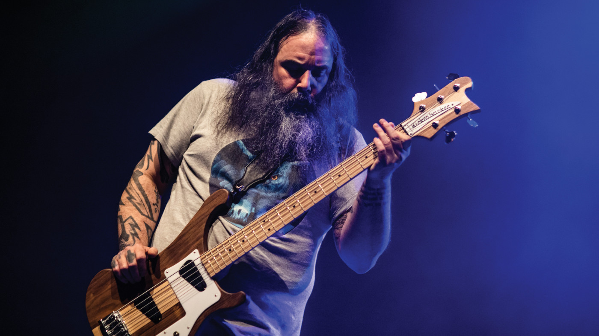
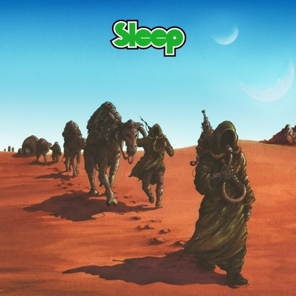

Al Cisneros is the lead singer and bassist for the bands Sleep and Om. Sleep represented the quintessence of 90s stoner rock and proved unequivocally that bass can VERY well be the lead instrument in a band. Al plays a Rickenbacker model that they made specially for him.
 Sleep, as the name suggests, has repetitive riffs that put the listener into a meditative trance. When looking into the creative process behind most songs, the genre name - "stoner rock" - checks out. The dudes once started a jam that ended up lasting more than an hour. They recorded it as one song - Dopesmoker (linked below). One of their concerts in Jerusalem lasted for 8 consecutive hours. That should paint a clear picture of how Sleep operates.